Ludgerus-Schachdiplom 2
Digitaler Diplom-Lernweg mit Übungen und Abschlusstest. Trainiere strukturiert und weise dein Können Stufe für Stufe nach.
Für alle, die die Regeln sicher beherrschen und besser werden wollen. Schwerpunkte: Taktik, Strategie, Endspiel und Eröffnungen.
Strukturierter, digitaler Lernweg mit Aufgaben und Abschlusstest. Schritt für Schritt trainieren und das eigene Können nachweisen.
Digitaler Diplom-Lernweg mit Übungen und Abschlusstest. Trainiere strukturiert und weise dein Können Stufe für Stufe nach.
Strategie und Partieplanung: 12 Module in drei Lernstufen mit 36 Stellungen. Du findest einen Plan, spielst ihn am Brett und begründest ihn. Jede Stufe sendest du an deine Lehrkraft.
Aufeinander aufbauende Kurse mit interaktivem Buch und passendem Test. Kurs I steht im Bereich für Einsteiger.
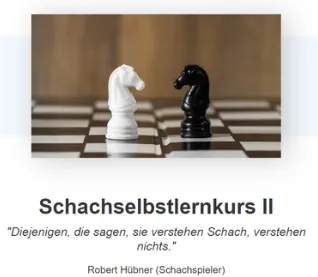
Eröffnung, Taktik, elementare Mattführung, einzügige Mattaufgaben, erstes Endspielwissen.
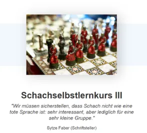
Mattstellungen, Mattführung mit einem Turm, Matt abwehren, weitere Taktik und Endspiel.
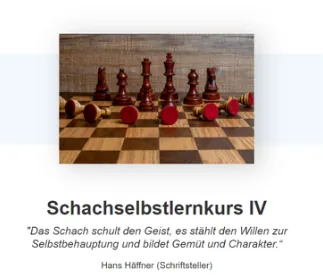
Weitere taktische Begriffe und Endspielwissen. Etwa 10 bis 12 Stunden.
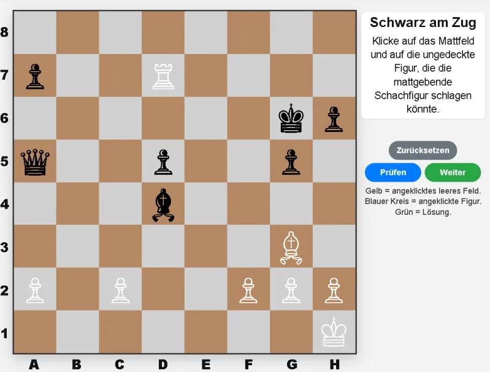
Finde das Mattfeld und die Figur, die den Mattzug schlagen könnte. Achtung: Eine Aufgabe enthält einen Fehler.
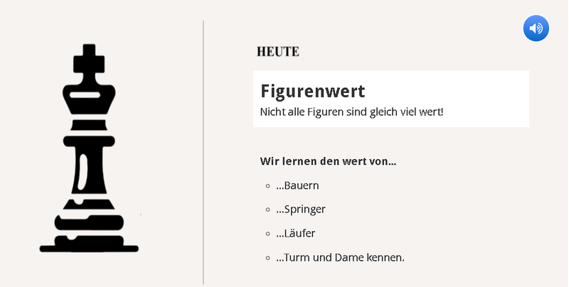
Interaktive Aufgaben zum taktischen Verständnis.
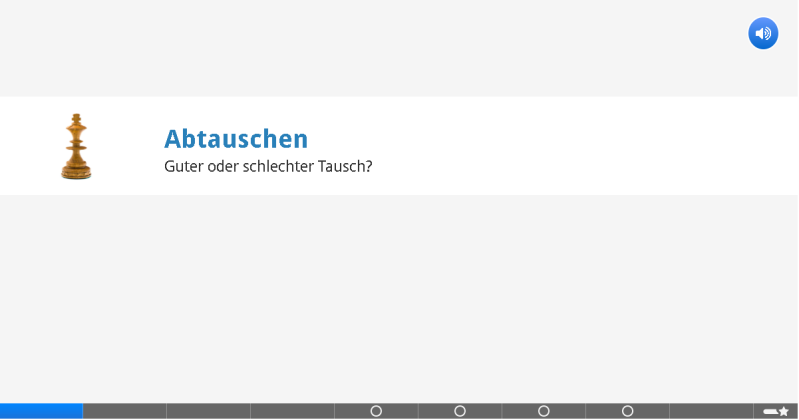
Weitere interaktive Aufgaben zum taktischen Verständnis.
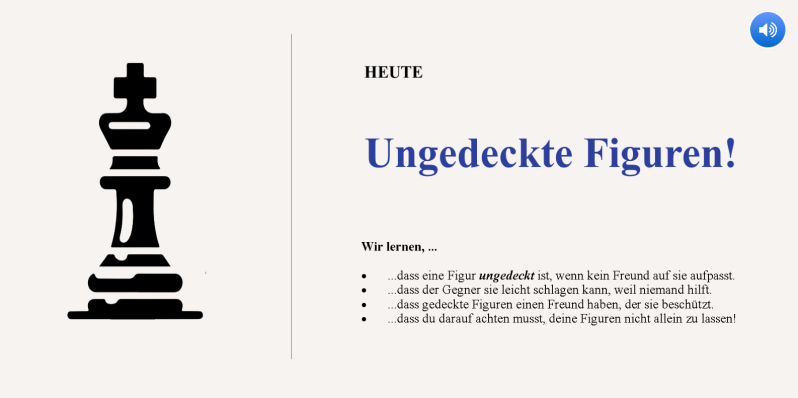
Noch mehr Aufgaben zum taktischen Verständnis.
Acht Grundsätze: aktive Figuren, offene Linien, Vorposten, Läufer, Bauernstruktur, Königssicherheit, Abtausch und Planfindung.
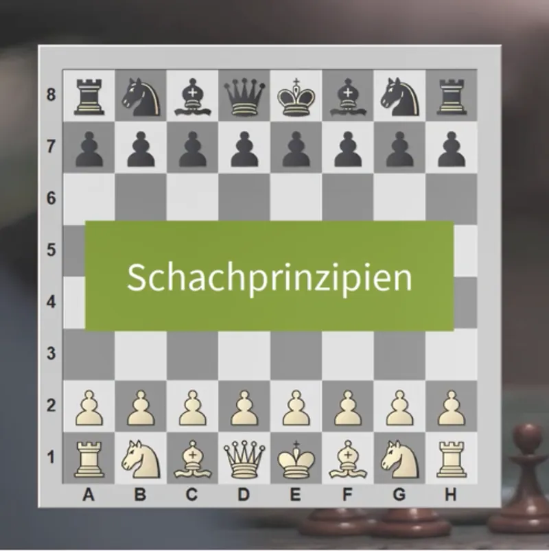
Leitlinien, die zu besseren Stellungen führen und die eigenen Fähigkeiten verbessern.
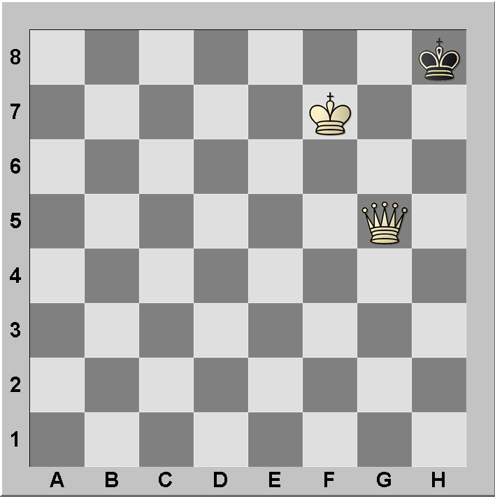
Lernvideo und Übung zur Mattführung gegen den einzelnen König.
Video plus Übung zum strategischen Thema Bauernstruktur.
Wie du deine eigene Bauernstruktur stärkst.
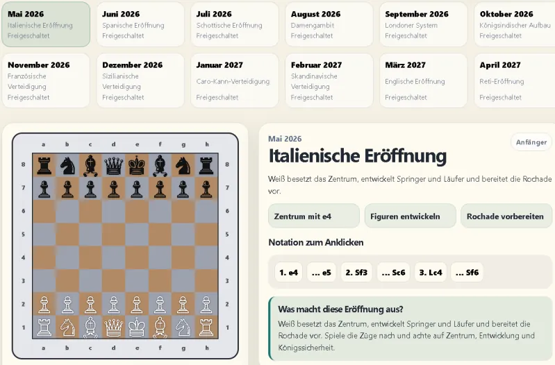
Bis April 2027 jeden Monat eine neue Eröffnung mit spielbarem Brett und einfachen Erklärungen.
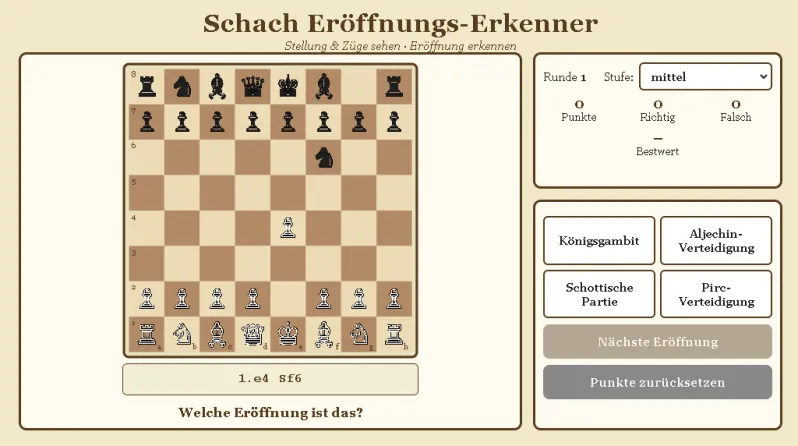
Erkenne an Stellung und Zugfolge, welche Eröffnung gespielt wurde. Sammle Punkte.
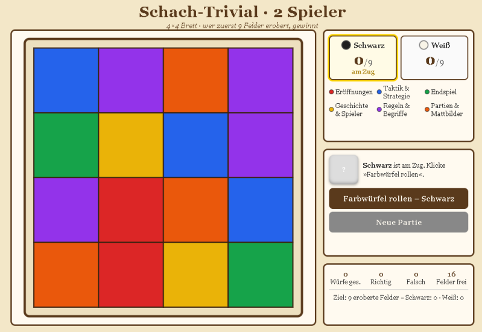
Wissensspiel auf dem 4×4-Brett: Wer erobert zuerst neun Felder?

Quiz im Jeopardy-Stil, ausgelegt für eine DWZ von etwa 800 bis 1200.

Beantworte Fragen und sammle Stufe für Stufe Bauerntaler.
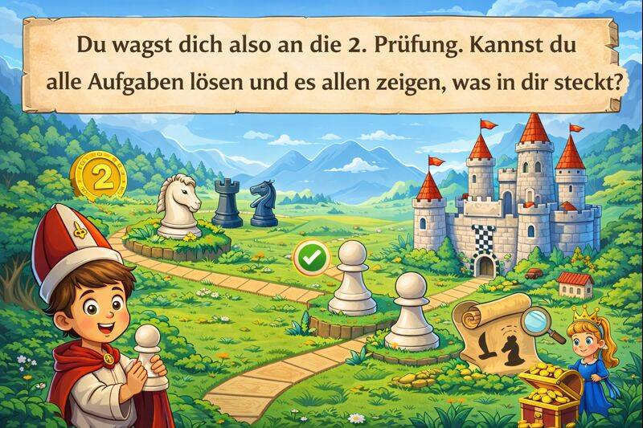
Game Map: Fesselung, Gabel, Spieß, Abzugsschach und einfache Mattbilder erkennen.
Spannende Fragen rund um das Schachspiel.
Die meisten Partien werden durch taktische Schläge oder im Endspiel entschieden. Hier dreht sich alles ums Mattsetzen und die wichtigsten Endspiele.
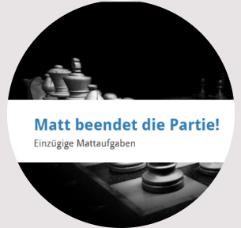
Setze in nur einem Zug matt. Ideal zum Mustertraining.
Finde das erzwungene Matt in zwei Zügen.
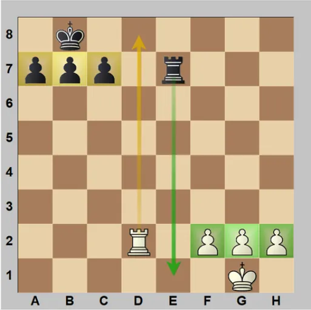
Nimm den Figuren, besonders dem König, wichtige Felder.
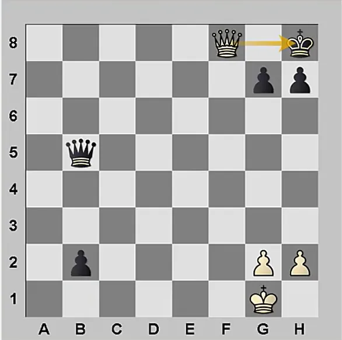
Dame oder Turm dringt auf die Grundreihe ein und setzt den hinter Bauern eingeklemmten König matt.
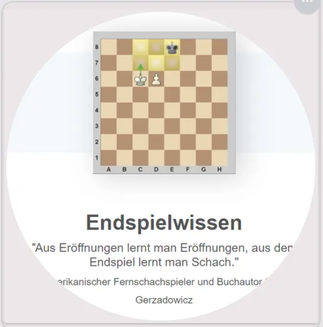
Wer das Endspiel beherrscht, der kann Schach spielen. Sammlung mit Endspielaufgaben.
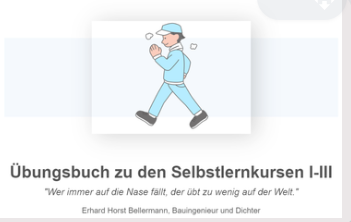
Viele Wiederholungsfragen aus den Selbstlernkursen I bis III.
Mädchen aus der Schule wünschten sich, dass nicht immer nur männliche Figuren und Stimmen erklären. Recht haben sie. In dieser Reihe erklärt Emma, mit eigenem Intro-Song.
Bewährte externe Plattformen für tägliches Taktiktraining.